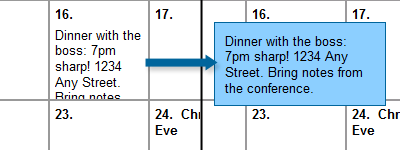

Most calendars on the web these days are built using large, complex tables. And while an argument could possibly be made that stuff in a calendar is a form of tablular data, it seems to me that in most cases a calendar is really just a list of events happening on specific dates. And that makes a table overkill for most situations in my book.
So my goal for this tutorial was this: I wanted to create a list-based calendar that used CSS for its layout, that also had the ability to display notes on specific dates (because a calendar without notes isn’t all that useful, in my mind).
I started out with the XHTML:
<ol id="calendar">
<li>
<ul>
<li>Rent due!</li>
</ul>
</li>
<li></li>
<li></li>
<li>
<ul>
<li>Vet Appointment at 3pm with Fuzzy.</li>
</ul>
</li>
<li></li>
...and so on...
</ol>
I tried to keep the XHTML as simple as possible. The entire calendar is just a big ordered list. I used an ordered list because dates on a calendar tend to occur in a pretty specific order every month, so an OL was the semantically correct choice. Also, because ordered lists are numbered by default, an OL saves me from having to manually add the date. Each date is a list item within the ordered list. If a date has a note associated with it, the note is nested within the list item as an unordered list, keeping things semantic.
Next, we start structuring the calendar list:
#calendar {
margin: 0;
padding: 0;
width: 700px;
border: 2px solid #333;
background-color: #ddd; }
Specifying the width of the calendar gives us a firm area to work with. I chose 700 pixels just to make it easier on myself – that gives me 100 pixels for every day of the week. You could put any size you wanted in here, or even use a proportional size such as ems if you’d like.
However, I ran into my first snag at this point. I knew I was going to be floating the list items, which would effectively collapse my calendar OL – the contained LIs wouldn’t be taking up any space. Originally, I got around this problem by specifying a height on the calendar, but that isn’t ideal, because not all months have the same number of weeks. So to improve the flexibility of the calendar, I added an unsemantic div to the end:
.clear {
clear: both; }
Next up, I created the basic layout for the individual calendar dates:
#calendar li {
list-style-position: inside;
font-weight: bold;
width: 88px;
height: 88px;
border: 1px solid #999;
float: left;
background-color: #fff;
padding: 5px;
overflow: hidden; }
The list-style-position property moves the list item’s number to the inside of our box. Then, all I have to do is specify a size (88px for content, plus 5px padding and 1px border on all sides = 100-by-100 pixel box) on our elements and float the elements left. Now, exactly seven list items fit in every row. To ensure our notes don’t interfere with our calendar’s layout, I’ve set the overflow of the list item to “hidden.”
We’ve gotten our dates to line up in a row, but there’s still one problem: not all months start on the first day of the week. So how do we get the first day to where it’s supposed to be? For that, I set up seven special classes:
#calendar li.sunday {
margin-left: 0; }
#calendar li.monday {
margin-left: 100px; }
#calendar li.tuesday {
margin-left: 200px; }
#calendar li.wednesday {
margin-left: 300px; }
#calendar li.thursday {
margin-left: 400px; }
#calendar li.friday {
margin-left: 500px; }
#calendar li.saturday {
margin-left: 600px; }
One of these classes gets applied to the first day of every month, which pushes the day into the proper column. The rest of the dates automatically wrap around the first one, so only one class is needed to get our columns squared away:
<ol id="calendar">
<li class="monday">
<ul>
<li>Rent due!</li>
</ul>
</li>
Now that our calendar is aligned properly, we can focus on styling the notes that make our calendar really useful:
#calendar li ul {
margin: 0;
padding: 0;
clear: both; }
#calendar li ul li {
list-style: none;
font-weight: normal;
float: none;
border: none;
padding: 5px 0;
margin: 0; }
Most of this is pretty simple stuff: we’re just removing the margins, padding, and list styles from the unordered list to conserve space, then adding a few styles to the list item to make it look nice.
Of course, there’s still one problem with our notes: because of our “overflow: hidden” rule earlier, longer notes are going to get truncated. It’s a necessary evil to keep our calendar formatted correctly. So to get around that, let’s add a hover state to our notes:
#calendar li:hover ul li, #calendar li.hover ul li {
position: absolute;
width: 150px;
margin-left: -38px;
height: auto;
background-color: #8cf;
border: 1px solid #069;
padding: 10px;
z-index: 10; }
This rule pulls our notes out of the normal document flow (with “position: absolute”), makes them a little wider, and creates a box around them. The automatic height ensures that the box we’ve created is always big enough for our note, and the z-index ensures that the note is on top of our calendar. The negative margin helps center the note over the date it came from.

And you’ll also notice we’ve specified a hover pseudo-class and a hover class above. This is because IE doesn’t respect hover states on anything other than anchors. So to get around that, we borrow our hover class JavaScript from the Easy CSS Dropdown Menus article, which allows us to use hover classes just just as easily as our pseudo-class.
And that’s all it takes to create a semantic, CSS-only calendar! At least, for as far as Firefox and Safari are concerned. Opera and Internet Explorer still present a bit of a problem: neither are displaying the numbers on our ordered list. However, both browsers are displaying the same behavior for different reasons.
Opera’s problem is simple: it doesn’t display the number whenever the list item is blank. So to fix this problem for Opera, all you need to do is fill your empty list items (those without notes) with a non-breaking space ( ).
Internet Explorer’s problem is, as usual, more complicated. IE is ignoring our “list-style-position: inside” rule from earlier and is displaying the list numbers to the left (outside) of our date box… rendering them essentially invisible. It’s a hasLayout problem, and you can read more about that here if you’d like. Unfortunately, I haven’t been able to find a real fix for this problem yet. The only viable alternative that I can find would be to include the date inside the list item (<1>, <2>, and so on), and apply a “list-style: none;” rule to the ordered list. I don’t like this solution as much, because it’s not making effective use of the ordered list, but if you need your calendar to work in IE, this is probably the best alternative.
And that’s that. You can see this calendar in action here. Let me know if you have any suggestions for workarounds on that IE bug!
Update: I’ve responded to a lot of the fantastic comments, concerns, and articles of debate in a separate article. You can read it here.
Great post! I love using lists for all sorts of things (especially menus). Thanks for posting! (I’m the first post, yeah!)
That is excellent! I have been thinking about this very same thing lately. I hate using tables for calendars, but it was always the easiest thing to do, since I already had the code for it. I might have to upgrade that now.
Including the dates inside the list items may not make the most effective use of the ordered list, but it does make it easier to know what date each list item is when working adding notes to the code.
Any ideas on how to do events spanning multiple days? For example, attending a conference that runs from Monday-Thursday.
Pingback: Создание календарей при помощи CSS | АяксЛайн.ру
Very good. Looks like I’ll be using this for a couple of personal projects.
Thanks.
Thanks for all the great comments, all! :)
Gary: You’re right… I don’t like it from a purist’s point of view, but having the date in the list item would be handy if you’re hand-building a calendar. And it has the added benefit of being IE-compatible.
Sean: I’m not sure yet how that’d be done. I think it’d be possible, but it’d probably involve extra classes and some JavaScript. Maybe I’ll have to sort that out for another tutorial in the future or something.
While this is certainly a nice example of CSS, I think you are missing a few features that a normal calendar presents: No days of the week, and text resizing is not working (perhaps an overflow could help).
Nice job though on the styling over all.
Pingback: i love innovation
I’m not so sure this truly semantic as your using a list purely for presentation when it would seem that a calendar would be more semantic as a table (I hate to say that) but it’s true… It is after all, a grid of data.
I am becoming concerned that the web development community is thinking vary narrowly at what they consider semantic. Using a list for everything on your site is not semantic it’s just a reincarnation of tables but instead of tr’s and td’s your promoting ul’s, and li’s. I’m not a semantics expert but I have a pretty good idea how a screen reader is going read over your calendar.
I’m not categorically saying this is wrong, however it doesn’t quite seem right to me. After all, I thought the idea behind us web developers rallying behind css and xthml was that it was more universally accessible. The widespread abuse of lists in this manor appear to be having a negative effect on accessibility rather than a positive one.
It’s just food for thought, and we are constantly learning and re-evaluating our thoughts so I too may change my opinion on this in time. Right now I can’t get behind this.
Pingback: Fatih Hayrioğlu'nun not defteri » 19 Haziran 2008 web’den seçeme haberler » Vista, Aero, düğmelerine, düğme, oluşturmak, Bağlantı
That’s a good argument, Mark, and I agree that using lists for the sake of lists (or for the sake of not using tables) isn’t good practice.
But in this instance, I still maintain that it’s perfectly reasonable to think of a calendar as a list — particularly if your calendar is acting predominately as a list of things you’re doing on specific days.
I also agree that we normally think of calendars as a grid — but that’s only because such data are traditionally presented to us as a grid, not because they are naturally and exclusively grid material. Similarly, spreadsheets are grid-based… but that doesn’t mean that a graph couldn’t present the same information in an equally semantic but additionally useful way.
Perhaps it’d be more semantic if a definition list was used? The dt’s could declare months, weeks, or days and the dd’s could break each down (depending on context). Really, a calendar’s semantic interpretations are too many to choose just one… I think the context might help best determine the “right” approach. Funny, context defining semantics. Go figure ;) For the record, I like this solution as, while I consider a calendar to contain data, I don’t consider its data “tabular” in the sense that it’s cross referenced from a header – each individual item (day) is contained within a larger item (month) so, to me, this list based solution makes more sense. But a chart listing holidays and whether or not you get them off of work… that’d be tabular.
But that’s just me.
While it’s an interesting exercise to format a list as a calendar, a calendar IS tabulatory data and the correct mark-up for it is the humble, much misused table tag.
If you doubt it, look at it like this: Does the row a day fall on give you additional information about that day? Yes, it conveys the week the day falls on. It also groups all the days on the row into the same week.
Does the column the day appear in give you additional information about that day? Yes, it conveys the day of the week the day falls on. It also groups all the days in the column into the same day of the week.
A list does not convey this relationship.
Interesting exercise non-the less :-)
Understood, Richard. Your argument proves that a table is (or can be) a good way of displaying that information, because it provides ancillary information. But I’m still not convinced it’s the only good way of displaying that information.
I think context matters a lot in this case. Does the day of the week, or the week of the month, matter in my situation? That’s variable. In some instances (for example), it might be very important to know that rent is due on the 1st of the month, and of only passing interest that the 1st happens to fall on a Thursday this time around.
So I think what I’m trying to say is, if your calendar happens to function more as a to-do list than anything else, a list might make a lot of sense as your fundamental structure. But if your calendar generally exists to let you know what day of the week it is, and how that day relates to the other days in your week… well, then a table probably still does make a lot of sense.
I’m really enjoying this conversation! Thanks for keeping this interesting, all. :)
I think there’s a fundamental division here. On one hand you have a calendar – the presentation of dates arranged in a grid for scanning. These dates may or may not contain events or activity, it shows the whole.
On the other hand you have events and activities, which are very well suited to lists and can exist with value outside of the scope of a calendar. It would seem quite reasonable to me that the best exercise would be to present the calendar as a table and the events within that calendar as a list. Not sure how feasible that would be – but would solve the semantic issues.
I don’t necessarily agree with the people who’ve been saying “a calendar is tabular data”. I think, at least, a good case could be made that event or scheduling calendars, for instance, are more list-like.
To say data is “tabular” often means that the information will be best looked up by two variables to find a third, in an (x, y) = ? fashion. If the goal of using the calendar is to identify a day of the month, then the weekday could be the X axis, and the week the Y.
However, an event calendar user is not associating weekdays with month-days as much as they are trying to associate a certain day with a certain event. Since days of the month are consecutively ordered, a consecutively ordered list makes sense.
Also, it means that you can do fancy view-switching– to a flat list layout to allow reading longer entries, for instance– without changing anything but the CSS.
Pingback: links for 2008-06-20 « Richard@Home
Pingback: Max Design - standards based web design, development and training » Some links for light reading (25/6/08)
I don’t feel it was your intention to start a semantics debate as opposed to simply posting a technique, but it’s great to see a lively discussion happening here.
Calendars lose semantic value when marked as a list. By definition a calendar provides the direct relation between a day and a date. Using a list results in the loss of that relationship. Although a list may be applicable with the original intention (providing a list of things to do), I still believe tables are a better fit.
That is not to say there aren’t (visual) benefits of using a list. Having the ability to switch to a ‘list view’ may sound appealing, but even in that case you’d have to look up a day for your date.
I think the major underlying issue to consider is the nature of the data itself. If you’re marking up a calendar, it’s got columns headed by day and the dates fill in below dependent on what day they fall upon. It is that relationship alone which I believe classifies a calendar as tabular data.
Thanks for sparking this conversation!
You’re right, Jonathan — it wasn’t my goal to start a semantics debate. But I’ve really enjoyed having it here! :) It’s great to hear all the different perspectives. I’ve been following this thread very intently.
Bah. If you are going to treat your calendar as a list of events (perfectly legal) please do so. But when you say that and then end up with a table only without using a table – I don’t subscribe.
Your end result IS a table based on the weekdays (only names are hidden, why? to make it less obvious?) so using table for that would be much better option.
The only advantage of this would be that you can different view–like true list–without changing html code, but – this view is not very useful without the names for the days of the week and the empty entries which are ok in table view, but look odd in list view.
Interesting as an exercise – yes.
Useful in practice – no. Sorry.
Rob, some very nice thinking here. I’d like to see what you come up with if you wrestle with some of the feedback that people have put forward here. I really enjoy finding elegant uses for lists and unorthodox, but useful applications of CSS (to tables for instance). Keep up the good work. Cheers!
Pingback: Tables Or Lists - The HTML Calendar Debate :: Unintentionally Blank
There is no need to use a clearing div in this solution – just style your ol with overflow:auto (or hidden).
Pingback: links for 2008-06-25 at Ip’s.
I added a follow up post a day or so after my first post and now it’s gone. Did you delete it?
Not intentionally, at the very least, Mark. I get 100+ spam comments a day, so it’s possible that I got a little over-zealous and deleted yours by mistake. If you remember the gist of it, I’d love if you’d re-post. I promise I’m not trying to censor the conversation in any way! :)
@Rob I think your argument that: “in this instance, I still maintain that it’s perfectly reasonable to think of a calendar as a list — particularly if your calendar is acting predominately as a list of things you’re doing on specific days.” Holds some water. I’m not so sure I can agree, but at least I follow your thought process.
I suppose we can all argue the point until the end of time and make no progress. I am sure that many others more intelligent than I have probably had the same discussion. I don’t know what the best answer is to be honest. I can see both sides of the argument.
I guess the bigger issue for me is that I am seeing more and more “divless” layouts pop up around the net claiming semantics and accessibility are first on their mind. However using a screen reader makes these sites verbose and problematic. Users have to distinguish between list order context, and actual content.
I want to believe that we can have semantics but we must also have usability and accessibility. As web developers I think we also have look for that zone between the black and white and find the grey area that we all live in and make a decision based on what is best for all users to our sites.
Now one thing I wanted to say before that I never did was great article on CSS your skills are awesome with it and I think there is something to be learned from your example. Great job!
Pingback: An Argument Against Faux Absolute Positioning - CSSnewbie
Pingback: June’s Best: This Month in Web Design | Vandelay Website Design
Pingback: June’s Best: This Month in Web Design | .:: ju ::.
Pingback: On Calendars, Lists, Tables and Semantics - CSSnewbie
Pingback: New to CSS? New to CSSnewbie? Start Here! - CSSnewbie
I’m new here and read this fascinating article with interest. Then, way at the bottom, you dropped the bomb … it doesn’t work in IE.
Please consider placing this warning at the top so I can avoid wasting my time. I really felt like you led me down the garden path.
If CSS worked in all browsers the same, I would have no problem whatsoever coming up with working code. The only reason I’m reading articles like this is to solve formatting problems in my web designs. I’m sure others are quite interested in studying the philosophical ramifications of semantic markup vs. layout markup. I am not.
If you have a solution that works in all important browsers I will continue to build my calendars using dynamically generated tables. It’s not as easy as generating lists, but it works in all browsers.
Hi (other) Rob,
It’s not that this technique doesn’t work on IE… it’s that it doesn’t work the way I’ve presented it here. However, I do describe a way in which it could work in IE: just include the date inside the list item. I personally don’t like this alternative, but I personally don’t much like IE, either. ;) If you want to use this technique, and need it to work in IE, just follow the workaround.
I apologize if you think I’m being misleading, but my goal here isn’t just to become a how-to guide for CSS techniques. I’m teaching process here just as much as product, and the path through the garden is just as important to me as the plants on either side (to pillage a metaphor).
Pingback: Edward Guillen
Nice post
but there was lots of bug for ie
i think u have not tested this in ie6 or later
just check
thanks for ur help
Pingback: Understanding XHTML Semantics - CSSnewbie
Pingback: Recent Links Tagged With "haslayout" - JabberTags
First, thank you for this excellent CSS.
I translated it to sass then corrected to handle multiple inner list items. Also extended for supporting month & week views. I hid the list style and embedded the date in the inner ul to support single week views.
Here’s the calendar.sass:
http://gist.github.com/46871
Thank you
It doesn’t work at all. I think I will use the good old table.
Not a bad start at all. I managed to convert this to a completely fluid layout with about 30 minutes of changes and testing. I also have it working perfectly in a year style layout with 12 mini calendars on the same page.
I looked for several hours at various css based calendar styles, and this is the most versatile that I’ve found. The most difficult part in moving to a fluid width is keeping the top row even with the rows below. In this case, I used an increasing border-left width. Anyway, great resource, highly recommended.
great tutorial.
i had the same idea a couple of days ago but my implementation was complicated and inefficent so i roamed to find a better one.
I have to add that the list approach can also be much more flexible in sense that with correct styling you can display a different layout, instead of the only calendar view, you can have a list-view (like iCal).
I’m trying just to implement this :)
…well actually i’m not able to improve on this.
It’s a nice implementation, but it is impossible to enrich the style without adding html. Adding collapsing-borders is impossible since :first/last-child won’t be able to target the right LIs :(
that’s why i started with a more complex layout the other day, but grouping weeks in other lists breaks the “semantic”.
/sigh
My Firefox 3.6 on OSX doesn’t show the dates while Safari does. Any ideas why?
overflow: hidden; seems to make the #’s disappear in Firefox. Any tips on how to make the numbers show up automatically?
@Charlie: list-style-position: inside ?
I visited those sites and saw the demo and downloaded some of them. they are really good and mind blowing. thanks for sharing with us.
Great article! To remove the surplus div at the end that clear the floats just add overflow to the #calendar class. I used overflow:hidden; and removed the div succesfully in IE and FF.
Learned this technique from the Clearing Floats article by Russell Heimlich at http://www.russellheimlich.com/frontend-tips/clearing-floats.htm
Regards,
Rob